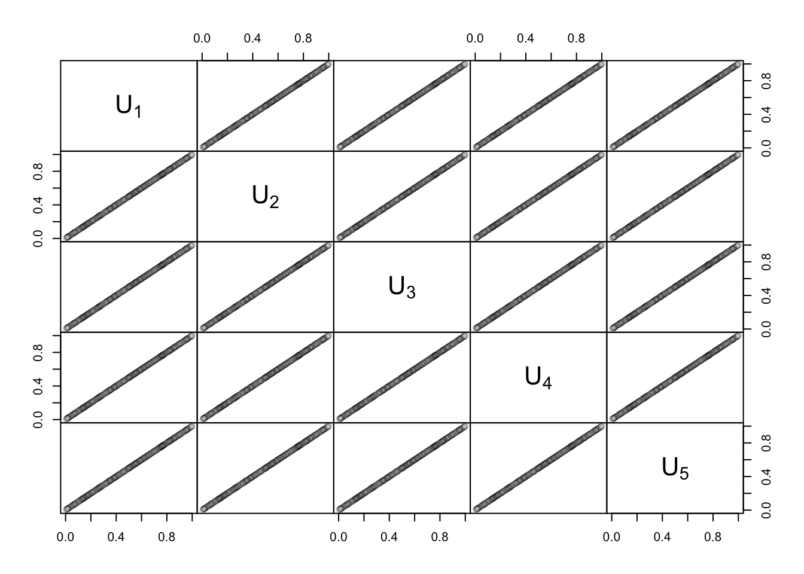
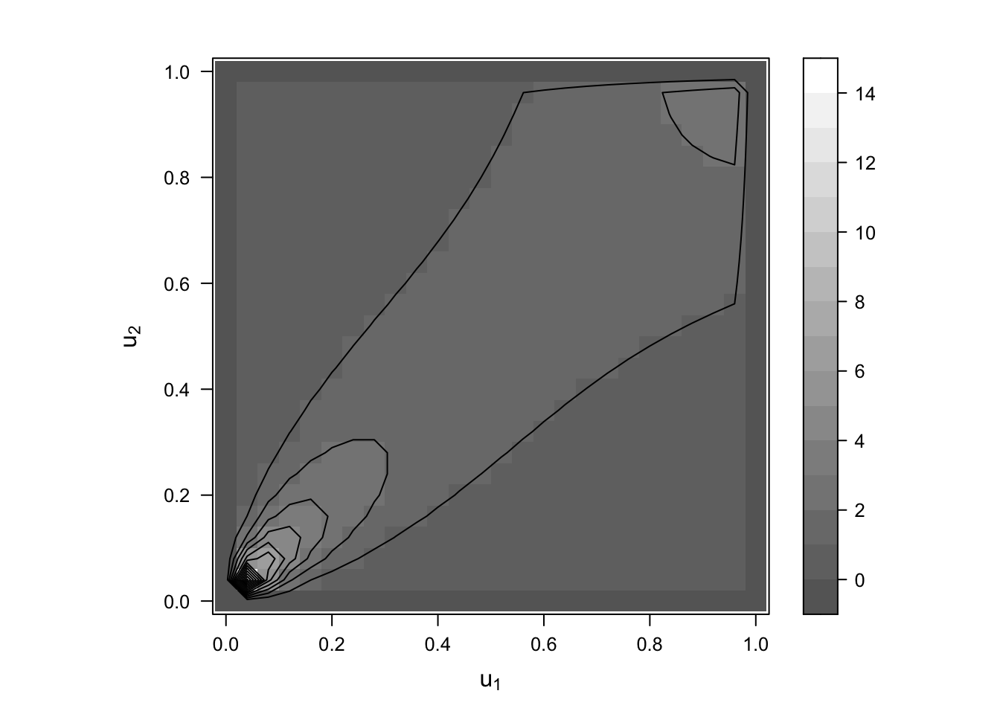

Chapter 6 Copulas
In the next chapter, we are going to focus on Copulas. Copulas are used to define dependency concepts for modelling a random vector of financial risk factors.
6.1 What on earth are Copulas?
Copulas are a framework for modeling multivariate data and defining multivariate models. ACopulas isolate the description of the dependence structure of a joint distribution function for a random vector of risk factors. This is handy because it allows us to separate the joint dependence of risk from the marginal, individual risk. As such, they allow us to differentiate and quantify between idiosyncratic and systemic risk. Especially, the have three distinct advantages:
- Copulas show us how to define a number of useful alternative dependence measures to the correlation measures
- Copulas express dependence on a quantile scale, as such they are better suited to explain the behaviour of extreme events
- Copulas allow us to follow a bottom-up risk approach, in which we can combine the marginal behaviour of individual risk to obtain a general, overall risk structure
- Copulas let us combine the marginal models with a variety of dependene models to understand the sensitivity of risk to the specification of dependence
- Copulas are easily simulated. Thus, one can use Monte Carlo simulations to study them
As such, they characterise the co-dependence of components of multivariate distributions and can be combined with any set of univariate marginal distributions to form a full joint distribution.
In essence, the primary financial use case for copula models is the management of portfolios that contain assets which have a strong correlation in their tails. That is, assets which may be mildly correlated in normal times but exhibit strong losses at the same time.
Let’s first consider the basic properties of Copulas
6.1.1 Copula Properties
We define multivariate distribution functions that are copulas as \(C(\textbf{u}) = C(u_1,\dots,u_d)\). Mapping C to obtain: \(X:[0,1]^d \rightarrow [0,1]\), we define three properties:
- \(C(u_1,\dots,u_d) = 0\) if \(u_i = 0\) for any i
- \(C(1,\dots, 1,u_i,1,\dots,1) = u_i\) for all i \(\in [1,\dots,d]\)
- For all \((a_1,\dots,a_d), (b_1,\dots,b_d) \in [0,1^d\) with \(a_i \leq b_i\) it holds that:
\[ \sum_{i_1=1}^2\sum_{i_d=1}^2(-1)^{i_1 + \dots + i_d}C(u_{1i}, \dots, u_{di_d}) \geq 0 \]
whereas \(u_{j1} = a_j\) and \(u_{j2} = b_j\) for all j \(\in\) [1,d].
This equality is also called rectangle inequality and it ensures that \(P(a_1 \leq U_1 \leq b_1, \dots, a_d \leq U_d \leq b_d)\) is non-negative.
Any function which fulfills all three characteristics is a copula.
6.1.1.1 Quantile Transformation Properties
In order to work with Copulas, we need to become familiar with quantile transformations as well as generalised inverses. Let’s define the properties. First, we assume that F is a distribution function and \(F^{-1}\) is its general inverse. That is: \(F^{-1}(u) = inf[x:F(x)\geq u]\).
Quantile Transformation: If \(U \sim U(0,1)\) has a standard uniform distribution, then \(P(F^{-1}(U) \leq x) = F(x)\)
Proability Transformation: If X has a df F, where F is a continuous univariate df, then \(F(X) \sim U(0,1)\)
The first proposition is the key to stochastic simulation. This is because if we can generate a uniform variable U and compute the inverse of a distribution function F, we are able to sample from the distribution function. This implies that we can transform risks with a particular continuous distribution function to have any other continuous distribution.
6.1.1.2 Sklar’s Theorem
Sklar’s theorem shows the importance of Copulas to study multivariate distributions. By the theorem it follows that all multivariate distributions contain copulas and that copulas may be used in conjunction with univariate dfs to construct multivariate distributions. Sklar states that if we let F be a joint distribution function with margins \(F_1, \dots, F_d\), then there exists a Copula such that, for all \(x_1, \dots, d_d\) in \(\mathcal{R} = [-\infty, \infty]\):
\[ F(x_1,\dots,x_d) = C(F_1(x_1), \dots, F_d(x_d)) \]
If the margins are continuous, then C is unique - otherwise C is uniquely determined on \(Ran F_1 \times \dots \times Ran F_d\) whereas \(Ran F_i\) denotes the range of \(F_i\). This states that the distribution of any continuous random vector can be expressed using copula and the marginal distribution.
This states that the joint DF can be decomposed into two parts:
- The Copula C (containing all information about dependencies among random vectors)
- The univariate, marginal DFs F (containing all information about the univariate, marginal distributions)
It is easy to estimate the marginals of a random vector, so all we need is to estimate the copula function and this would lead to an estimator of the joint distribution.
We can visually explain Sklar’s theorem as well as the invariance property below. Doing so, we will take a sample from a t Copula whereas we define the following properties:
# Setup
library(nvmix)
set.seed(271)
# Sample from a t copula
n <- 1000
d <- 2
# Create correlation matrix
rho <- 0.65
P <- matrix(rho, nrow = d, ncol = d)
diag(P) <- 1
# Define the DOF
nu <- 3.5
set.seed(1996)
# Create the distribution
X <- rStudent(n, df = nu, scale = P)
# Create n IID realizations from the corresponding t copula
U <- pt(X, df = nu)
# Transformation of U to Exp(1) margins
Y <- qexp(U)As we elaborated, Sklar’s Theorem tells us that we can write the joint CDF in terms of the marginal CDFs and the Copula. Consequently, the combination both CDFs should provide us with the same dependence structure. Thus, we first, generate two RVs with a t distribution. They have the scale of a correlation matrix with \(\rho = 0.65\). We can plot their distribution and show three points:
X %>%
as.data.frame() %>%
ggplot(aes(x = V1, y = V2)) +
geom_point(alpha = 0.3) +
geom_point(data = X %>%
as.data.frame() %>%
filter(V1 == X[ind["A"],1] & V2 == X[ind["A"],2]), color = "violetred", size = 2.7) +
geom_point(data = X %>%
as.data.frame() %>%
filter(V1 == X[ind["B"],1] & V2 == X[ind["B"],2]), color = "darkgoldenrod2", size = 2.7) +
geom_point(data = X %>%
as.data.frame() %>%
filter(V1 == X[ind["C"],1] & V2 == X[ind["C"],2]), color = "cyan3", size = 2.7) +
ggtitle("Bivariate t distribution values") +
ylab("X2") + xlab("X1") +
scale_color_manual(name="Est. Variables", values=c("lightgrey", "dodgerblue4", "lightsteelblue3", "dodgerblue4", "violetred4")) +
scale_fill_manual(name="Actual Variables", values=c("lightgrey", "lightgrey", "lightsteelblue3", "dodgerblue4", "violetred4")) +
theme(plot.title= element_text(size=14, color="grey26",
hjust=0.5,
lineheight=1.2, margin=margin(0,15,15,15)), panel.background = element_rect(fill="#f7f7f7"),
panel.grid.major.y = element_blank(),
panel.grid.minor = element_blank(),
panel.grid.major.x = element_blank(),
plot.background = element_rect(fill="#f7f7f7", color = "#f7f7f7"), axis.title.x = element_text(color="grey26", size=12),
axis.title.y = element_text(color="grey26", size=12),
axis.line = element_line(color = "black")) +
theme(plot.margin = margin(0.3,0.3, 0.3,0.3, "cm")) This is the distribution of the bivariate t-values. We have highlighted three points to show make the theorem clear. We can now create the Copula of the bivariate t distribution with the command above. This will transform each RV based on the formula for the t-distribution Copula. In other words, we perform the first probability and quantile transformation to obtain different margins. Once we plot this, we obtain the following structure:
U %>%
as.data.frame() %>%
ggplot(aes(x = V1, y = V2)) +
geom_point(alpha = 0.3) +
geom_point(data = U %>%
as.data.frame() %>%
filter(V1 == U[ind["A"],1] & V2 == U[ind["A"],2]), color = "violetred", size = 2.7) +
geom_point(data = U %>%
as.data.frame() %>%
filter(V1 == U[ind["B"],1] & V2 == U[ind["B"],2]), color = "darkgoldenrod2", size = 2.7) +
geom_point(data = U %>%
as.data.frame() %>%
filter(V1 == U[ind["C"],1] & V2 == U[ind["C"],2]), color = "cyan3", size = 2.7) +
ggtitle("Copula of Bivariate t distribution values") +
ylab("U2") + xlab("U1") +
scale_color_manual(name="Est. Variables", values=c("lightgrey", "dodgerblue4", "lightsteelblue3", "dodgerblue4", "violetred4")) +
scale_fill_manual(name="Actual Variables", values=c("lightgrey", "lightgrey", "lightsteelblue3", "dodgerblue4", "violetred4")) +
theme(plot.title= element_text(size=14, color="grey26",
hjust=0.5,
lineheight=1.2, margin=margin(0,15,15,15)), panel.background = element_rect(fill="#f7f7f7"),
panel.grid.major.y = element_blank(),
panel.grid.minor = element_blank(),
panel.grid.major.x = element_blank(),
plot.background = element_rect(fill="#f7f7f7", color = "#f7f7f7"), axis.title.x = element_text(color="grey26", size=12),
axis.title.y = element_text(color="grey26", size=12),
axis.line = element_line(color = "black")) +
theme(plot.margin = margin(0.3,0.3, 0.3,0.3, "cm")) Transformed to the Copula, we can now proof the first part of the proof of Sklar. This tells us that each distribution can be expressed with a copula. That is, the relative locations of the points is the same as before, which shows the first connection of the bivariate distribution and its Copula.
Next, we can plot the second meta distribution (also known as t-meta distribution with Exp(1) margins) in order to set the margins according to the original t distribution and change the relative density to the original distribution. This is the second probability and quantile transformation.
Y %>%
as.data.frame() %>%
ggplot(aes(x = V1, y = V2)) +
geom_point(alpha = 0.3) +
geom_point(data = Y %>%
as.data.frame() %>%
filter(V1 == Y[ind["A"],1] & V2 == Y[ind["A"],2]), color = "violetred", size = 2.7) +
geom_point(data = Y %>%
as.data.frame() %>%
filter(V1 == Y[ind["B"],1] & V2 == Y[ind["B"],2]), color = "darkgoldenrod2", size = 2.7) +
geom_point(data = Y %>%
as.data.frame() %>%
filter(V1 == Y[ind["C"],1] & V2 == Y[ind["C"],2]), color = "cyan3", size = 2.7) +
ggtitle("t-meta distribution with Exp(1) margins") +
ylab("Y2") + xlab("Y1") +
scale_color_manual(name="Est. Variables", values=c("lightgrey", "dodgerblue4", "lightsteelblue3", "dodgerblue4", "violetred4")) +
scale_fill_manual(name="Actual Variables", values=c("lightgrey", "lightgrey", "lightsteelblue3", "dodgerblue4", "violetred4")) +
theme(plot.title= element_text(size=14, color="grey26",
hjust=0.5,
lineheight=1.2, margin=margin(0,15,15,15)), panel.background = element_rect(fill="#f7f7f7"),
panel.grid.major.y = element_blank(),
panel.grid.minor = element_blank(),
panel.grid.major.x = element_blank(),
plot.background = element_rect(fill="#f7f7f7", color = "#f7f7f7"), axis.title.x = element_text(color="grey26", size=12),
axis.title.y = element_text(color="grey26", size=12),
axis.line = element_line(color = "black")) +
theme(plot.margin = margin(0.3,0.3, 0.3,0.3, "cm")) We see that the relative locations of all points remains the same still. As such, applying the probability and quantile transformations, we only change the marginal distributions, but not the probability, of the individual observations. This proves that the combination of a univariate CDF and a Copula follows results in an expression for a joint CDF.
6.1.1.3 Strictly increasing functions
We can further state that if \(X_1, \dots, X_d\) is a random vector with continuous margins and a copula C and \(T_1, \dots, T_d\) are strictly increasing functions, then \(T_1(X_1) \dots, T_d(X_d)\) also has Copulas.
This states that Copulas are invariant to strictly increasing transformations of the component variables. This can be proved by obtaining:
\[ \begin{align} C(u_1, \dots, u_d) &= P(X_1 \leq x_1, \dots, X_d \leq x_d) \\ &= P(X_1 \leq F_1^{-1}(u_1), \dots, X_d \leq F_d^{-1}(u_d)) \\ &= P(T_1(X_1) \leq T_1 \cdot F_1'{-1}(u_1), \dots, T_d(D_x) \leq T_D \cdot F_d^{-1}(u_d)) \\ &= P(T_1(X_1) \leq F_{T_1(X_1)}^{-1}(u_1), \dots, T_d(D_x) \leq F_{T_d(X_d)}^{-1}(u_d)) \end{align} \]
6.1.1.4 Fréchet Bounds
Fréchet Bounds are important concepts for Copulas as they have important dependence interpretations. Let’s define these bounds.
For each copula we have the bounds:
\[ max(\sum_{i=1}^d u_i + 1 - d, 0) \leq C(\textbf{u}) \leq \min(u_1, \dots, u_d) \]
6.1.1.5 Meta Distribution of Copulas
The Meta Distribution of Copulas essentially constructs multivariate distributions from univariate and copulas while it allows for arbitrary margins. As such, it constitutes the second part of the Sklar’s Theorem proof that we showed visually, where we stated the identity of the relative positions of three points and in the third plot extended the margins.
6.1.2 Motivation for Copulas
Let’s quickly show why Copulas are handy tools to define the co-dependence structure of assets in risky scenarios.
For that, we use a pre-defined two simulated datasets which have an X1 and X2 variable.
a <- X %>% as.data.frame() %>%
ggplot(aes(x = V1, y = V2)) +
geom_point(color = "goldenrod", shape = 1) +
ggtitle("Copula Distribution of X1 and X2") +
ylab("X1") + xlab("X2") +
scale_color_manual(name="Est. Variables", values=c("lightgrey", "dodgerblue4", "lightsteelblue3", "dodgerblue4", "violetred4")) +
scale_fill_manual(name="Actual Variables", values=c("lightgrey", "lightgrey", "lightsteelblue3", "dodgerblue4", "violetred4")) +
theme(plot.title= element_text(size=14, color="grey26",
hjust=0.5,
lineheight=1.2, margin=margin(0,15,15,15)), panel.background = element_rect(fill="#f7f7f7"),
panel.grid.major.y = element_blank(),
panel.grid.minor = element_blank(),
panel.grid.major.x = element_blank(),
plot.background = element_rect(fill="#f7f7f7", color = "#f7f7f7"), axis.title.x = element_text(color="grey26", size=12),
axis.title.y = element_text(color="grey26", size=12),
axis.line = element_line(color = "black")) +
theme(plot.margin = margin(0.3,0.3, 0.3,0.3, "cm"))
b <- Y %>% as.data.frame() %>%
ggplot(aes(x = V1, y = V2)) +
geom_point(color = "goldenrod", shape = 1) +
ggtitle("Copula Distribution of Y1 and Y2") +
ylab("Y1") + xlab("Y2") +
scale_color_manual(name="Est. Variables", values=c("lightgrey", "dodgerblue4", "lightsteelblue3", "dodgerblue4", "violetred4")) +
scale_fill_manual(name="Actual Variables", values=c("lightgrey", "lightgrey", "lightsteelblue3", "dodgerblue4", "violetred4")) +
theme(plot.title= element_text(size=14, color="grey26",
hjust=0.5,
lineheight=1.2, margin=margin(0,15,15,15)), panel.background = element_rect(fill="#f7f7f7"),
panel.grid.major.y = element_blank(),
panel.grid.minor = element_blank(),
panel.grid.major.x = element_blank(),
plot.background = element_rect(fill="#f7f7f7", color = "#f7f7f7"), axis.title.x = element_text(color="grey26", size=12),
axis.title.y = element_text(color="grey26", size=12),
axis.line = element_line(color = "black")) +
theme(plot.margin = margin(0.3,0.3, 0.3,0.3, "cm"))
a + b + plot_layout(ncol = 1)We may now be inclined to ask for which data the dependence between both variables is larger. This is difficult to answer, as both have different scales and ranges. We can circumvent this by transforming the data using to have the same marginals. Doing so, we estimate the df by their empirical dfs (edfs) and then apply these marginal empirical dfs to the respective data columns. The function pobs() does this.
U <- pobs(X)
U_d <- pobs(Y)
c <- U %>% as.data.frame() %>%
ggplot(aes(x = V1, y = V2)) +
geom_point(color = "goldenrod", shape = 1) +
ggtitle("Copula Distribution of X1 and X2, scaled") +
ylab("X1") + xlab("X2") +
scale_color_manual(name="Est. Variables", values=c("lightgrey", "dodgerblue4", "lightsteelblue3", "dodgerblue4", "violetred4")) +
scale_fill_manual(name="Actual Variables", values=c("lightgrey", "lightgrey", "lightsteelblue3", "dodgerblue4", "violetred4")) +
theme(plot.title= element_text(size=14, color="grey26",
hjust=0.5,
lineheight=1.2, margin=margin(0,15,15,15)), panel.background = element_rect(fill="#f7f7f7"),
panel.grid.major.y = element_blank(),
panel.grid.minor = element_blank(),
panel.grid.major.x = element_blank(),
plot.background = element_rect(fill="#f7f7f7", color = "#f7f7f7"), axis.title.x = element_text(color="grey26", size=12),
axis.title.y = element_text(color="grey26", size=12),
axis.line = element_line(color = "black")) +
theme(plot.margin = margin(0.3,0.3, 0.3,0.3, "cm"))
d <- U_d %>% as.data.frame() %>%
ggplot(aes(x = V1, y = V2)) +
geom_point(color = "goldenrod", shape = 1) +
ggtitle("Copula Distribution of Y1 and Y2, scaled") +
ylab("Y1") + xlab("Y2") +
scale_color_manual(name="Est. Variables", values=c("lightgrey", "dodgerblue4", "lightsteelblue3", "dodgerblue4", "violetred4")) +
scale_fill_manual(name="Actual Variables", values=c("lightgrey", "lightgrey", "lightsteelblue3", "dodgerblue4", "violetred4")) +
theme(plot.title= element_text(size=14, color="grey26",
hjust=0.5,
lineheight=1.2, margin=margin(0,15,15,15)), panel.background = element_rect(fill="#f7f7f7"),
panel.grid.major.y = element_blank(),
panel.grid.minor = element_blank(),
panel.grid.major.x = element_blank(),
plot.background = element_rect(fill="#f7f7f7", color = "#f7f7f7"), axis.title.x = element_text(color="grey26", size=12),
axis.title.y = element_text(color="grey26", size=12),
axis.line = element_line(color = "black")) +
theme(plot.margin = margin(0.3,0.3, 0.3,0.3, "cm"))
c + d + plot_layout(ncol = 1)Having transformed these distributions, we can see that both factors have the same dependence structure. As such, if we want to study the dependence independently of the margins, we need to study the distributions of random vectors with U(0,1) marginals, which are also called copulas.
6.1.3 Copula Examples
In general, we can distinguish between three forms of Copulas.
- fundamental copulas
- implicit copulas (taken from well-known multivariate distributions using Sklar’s Theorem)
- explicit copulas
We will introduce each copula and plot distinct plots to show you the behaviour of these copulas. Specially, we show
- Perspective plots
- Contour plots
- Wire frames
- Scatter Plots
To show the joint dependent behaviour of each Copula.
6.1.3.1 Fundamental Copulas
We define three Copulas in this section.
6.1.3.1.1 The independence copula
The independence copula is given by:
\[ \prod(u_1, \dots, u_d) = \prod_{i=1}^du_i \]
Let0s show their distributional properties.
First, let’s look at the wire frame and level curves (the countour plot).
## Define the independence copula object
indec <- indepCopula()
## Copula (wire frame and level curves)
a <- wireframe2(indec, FUN = pCopula)
b <- contourplot2(indec, FUN = pCopula)
abNote that both show the same dependency structure, just once in 2D and once in 3D. Importantly, we understand that the value of the copula is zero if either \(u_1\) or \(u_2\) are zero. As such, we obtain that the value of the copula (the dependence measure) increases in an eliptic fashion in both parameters. As such, there is only a limited combination of both parameters. Consequently, the independence copula is a copula for two or more RVs which are largely independent.
Now, let’s look at scatterplots to show the combination of up to five random variables which can be defined by the independence copula. Doing so, we define random variables with runif().
## Scatter plots
U <- matrix(runif(n*d), ncol = 5)
## Plot the 2D scatterplot for independent data
plot(U[,1:2], xlab = expression(U[1]), ylab = expression(U[2])) # d = 2## Plot the 3D scatterplot for independent data
cloud2(U[,1:3], xlab = expression(U[1]), ylab = expression(U[2]), zlab = expression(U[3]))## Plot different the 2D scatterplots for independent data
pairs2(U) # d = 5As we can see, the data has no dependence structure. If this is the case for multivariate data, then we know that it can be modelled by a independent copula.
6.1.3.1.2 Comonotonicity Copula
The comonotonicity copula is the Fréchet upper bound copula, also given as:
\[ M(u_1, \dots, u_d) = min(u_1, \dots, u_d) \]
This copula is also the joint df of the random vector (U,…,U), whereas \(U \sim U(0,1)\). If \(X_1\) and \(X_2\):
- have continuous dfs
- are perfectly positively dependent (\(X_2\) is almost surely a strict increasing function of \(X_1\))
then the Comonotonicity Copula is their Copula.
## Copulas (wire frame and level curves)
n.grid <- 26 # number of grid points
u <- seq(0, 1, length.out = n.grid) # subdivison points in each dimension
grid <- expand.grid("u[1]" = u, "u[2]" = u) # build a grid
# Get the upper bound Fréchet Copula
W <- pmax(grid[,1] + grid[,2] - 1, 0) # values of W on grid
val.W <- cbind(grid, "W(u[1],u[2])" = W) # append grid
wireframe2(val.W) # wire frame plot of Wcontourplot2(val.W, xlim = 0:1, ylim = 0:1) # level curves of WHere, we can see the value distribution of the comonotonicity copula. The first non-zero value is at (0.5,0.5) and then increases monotonically. This is why it is called monotonicity copula and any data which is monotonically decreasing and continuous can be modelled accordingly. We can plot the 2-D Scatterplot (remember it is only defined for 2D).
plot(cbind(U, 1-U), xlab = expression(U[1]), ylab = expression(U[2]), col = tblack(0.5)) # sample of W for d = 2Here we can see the monotonically decreasing functional form of the data which includes the Copula above.
6.1.3.1.3 Countermonotonicity Copula
The countermonotonicity copula is the two-dimensional Fre ́chet lower bound copula from:
\[ W(u_1, u_2) = max(u_1, + u_2 - 1,0) \]
This copula is the joint df of the random vector (U,1 − U), where \(U \sim U(0,1)\). If \(X_1\) and \(X_2\):
- have continuous dfs
- are perfectly negatively dependent (\(X_2\) is almost surely a strict decreasing function of \(X_1\))
then the Countermonotonicity Copula is their Copula.
M <- pmin(grid[,1], grid[,2]) # values of M on grid
val.M <- cbind(grid, "M(u[1],u[2])" = M) # append grid
wireframe2(val.M) # wire frame plot of Mcontourplot2(val.M, xlim = 0:1, ylim = 0:1) # level curves of MAs opposed to the comonotonicity, we have here a more direct and stronger connection for the copula. That is, the max value incorporates that the copula value is sooner different from zero for a given correlation of the assets. Also, we can plot the distribution for strict monotonically increasing functions in more than a 2D scatterplot.
## Scatter plots
U <- runif(n)
plot(cbind(U, U), xlab = expression(U[1]), ylab = expression(U[2]), col = tblack(0.5)) # sample of M for d = 2cloud2(do.call(cbind, rep(list(U), 3)), col = tblack(0.05), # sample of M for d = 3
xlab = expression(U[1]), ylab = expression(U[2]), zlab = expression(U[3]))pairs2(do.call(cbind, rep(list(U), d)), col = tblack(0.05)) # sample of M for d = 5
Here, we can clearly see the distributional properties for which such a copula form is appropriate.
6.1.3.2 Implicit Copulas
6.1.3.2.1 Gauss Copula
If \(X \sim N(\mu, sigma^2)\) is a multivariate normal random vector, then its copula is a so-called Gauss copula (or Gaussian copula). By definition, this is given as:
\[ C_P^{Ga}(\textbf{u}) = \Phi_P(\phi^{-1}(u_1), \dots, \phi^{-1}(u_d)) \]
whereas \(\phi\) denotes the standard univariate normal distribution and \(\Phi_P\) is the joint density function. This Copula is automatically parametarised by the the d(d − 1)/2 parameters of the correlation matrix. The Gauss copula does not have a simple closed form, but can be expressed as an integral over the density of \(\textbf{X}\).
In two dimensions the Gauss copula can be thought of as a dependence structure that interpolates between perfect positive and negative dependence, where the parameter \(\rho\) represents the strength of dependence.
## Define the normal copula object
th <- iTau(normalCopula(), tau = tau)
nc <- normalCopula(th)
## Copula (wire frame and level curves)
wireframe2(nc, FUN = pCopula)contourplot2(nc, FUN = pCopula)We can also plot the densities of the copula
## Copula density (wire frame and level curves)
wireframe2(nc, FUN = dCopula, delta = 0.02)contourplot2(nc, FUN = dCopula)and show the multidimensional structure
## Scatter plots
nc. <- normalCopula(th, dim = 5)
U <- rCopula(n, copula = nc.)
plot(U[,1:2], xlab = expression(U[1]), ylab = expression(U[2])) # d = 2cloud2(U[,1:3], # d = 3
xlab = expression(U[1]), ylab = expression(U[2]), zlab = expression(U[3]))pairs2(U, cex = 0.4, col = tblack(0.5)) # d = 56.1.3.2.2 t Copula
We can extract a Copula from any other continuous distribution in the same way aas we did for the Gaussian Copula. In this case, we obtain the following parametric form:
\[ c_{v,P}^t(\textbf{u}) = t_{v,P}(t_v^{-1}(u_1), \dots, t_v^{-1}(u_d)) \]
whereas \(t_v\) is the distribution of a standard univariate t distribution with ν degrees of freedom, \(t_{v,P)\) is the joint distribution of \(\textbf{X}\) and P is the correlation matrix.
## Define the t copula object
nu <- 3 # degrees of freedom
th <- iTau(tCopula(, df = nu), tau = tau) # correlation parameter
tc <- tCopula(th, df = nu)
## Copula (wire frame and level curves)
## Note: pCopula() is only available for integer degrees of freedom
wireframe2(tc, FUN = pCopula)contourplot2(tc, FUN = pCopula)We can plot the densities and realise their larger dependence on the tails.
## Copula density (wire frame and level curves)
wireframe2(tc, FUN = dCopula, delta = 0.02)contourplot2(tc, FUN = dCopula)Also, the scatter plots of the t-Copula are defined by this structure:
## Scatter plots
tc. <- tCopula(th, dim = 5, df = nu)
U <- rCopula(n, copula = tc.)
plot(U[,1:2], xlab = expression(U[1]), ylab = expression(U[2])) # d = 2cloud2(U[,1:3], # d = 3
xlab = expression(U[1]), ylab = expression(U[2]), zlab = expression(U[3]))pairs2(U, cex = 0.4, col = tblack(0.5)) # d = 5As we can see, the t-Copula incorporates nicely the dependence structure on the individual tail distributions.
6.1.3.3 Explicit Copulas
Explicit Copulas are Copulas which have a closed form solution. We will encounter four such Copulas.
6.1.3.3.1 Gumbel Copula
The Gumbel Copula is a bivariate Copula with form:
\[ C_\theta^{Gu} = exp(-((-\ln u_1)^\theta + (-\ln u_2)^\theta)^{1/\theta}) \]
whereas \(1 \leq \theta \leq \infty\). The Copula has following specifications:
- If \(\theta = 1\), we obtain the independence Copula
- If \(\theta \rightarrow \infty\), we obtain the two-dimensional comonotonicity copula (= lower Fréchet Copula)
As such, the Gumbel Copula is also a swing copula, which varies between independence and perfect dependence, with the parameter \(\theta\) quantifying the strength of the dependence.
Let’s look at the Gumbel Copula more closely.
## Define the Gumbel copula object
th <- iTau(gumbelCopula(), tau = tau)
gc <- gumbelCopula(th)
## Create the frame and contour plot
## Copula (wire frame and level curves)
wireframe2(gc, FUN = pCopula)contourplot2(gc, FUN = pCopula)Compared to the Gaussian copula, the Gumble copula is slightly “wavier”, implying its contours are smoother. Given the logarithmic scales, this is to be expected.
## Copula density (wire frame and level curves)
wireframe2(gc, FUN = dCopula, delta = 0.02)contourplot2(gc, FUN = dCopula)We can further see that the density of the Copula is far higher compared to the Gaussian Copula, but the highest densities have a lower concentration at both edges.
## Scatter plots
gc. <- gumbelCopula(th, dim = 5)
U <- rCopula(n, copula = gc.)
plot(U[,1:2], xlab = expression(U[1]), ylab = expression(U[2])) # d = 2cloud2(U[,1:3], # d = 3
xlab = expression(U[1]), ylab = expression(U[2]), zlab = expression(U[3]))pairs2(U, cex = 0.4, col = tblack(0.5)) # d = 5The concentration in the edges of the two factors is especially prominent when looking at the scatterplot matrix. Also the multidimensional dependency plots show a continuous tail dependency which is strong for all components.
Another interesting Copula is the survival Gumbel Compula. This is defined as:
## Scatter plot of a survival Gumbel copula
pairs2(1-U, cex = 0.4, col = tblack(0.5))A survival Gumbel Copula has even larger tail dependencies and can thus represent even better catastrophic events.
6.1.3.3.2 Clayton copula
The Clayton Copula is also a bivariate Copula represented by:
\[ C_\theta^{Cl}(u_1, u_2) = (u_1^{-\theta} + u_2^{-\theta} - 1)^{-1/\theta} \]
Whereas \(0 \leq \theta \leq \infty\).
Also for this Copula, we have that:
- If \(\theta = 1\), we obtain the independence Copula
- If \(\theta \rightarrow \infty\), we obtain the two-dimensional comonotonicity copula (= lower Fréchet Copula)
Both Gumbel and Clayton belong to the Archimedean Copula Family.
Let’s look at the Clayton Copula
## Define the Clayton copula object
th <- iTau(claytonCopula(), tau = 0.5)
cc <- claytonCopula(th)
## Copula (wire frame and level curves)
wireframe2(cc, FUN = pCopula)contourplot2(cc, FUN = pCopula)As we can see, the Contour shows us that the ranges are smoother and their smoothness increases with increasing dependency.
## Copula density (wire frame and level curves)
wireframe2(cc, FUN = dCopula, delta = 0.02)contourplot2(cc, FUN = dCopula)
The density plot shows an even larger concentration of the Copula values in the extremes. As such, if both RVs have either very low or high values, we see a strong level of the Copula value. However, it quickly decays and is practically zero in central areas.
## Scatter plots
cc. <- claytonCopula(th, dim = 5)
U <- rCopula(n, copula = cc.)
plot(U[,1:2], xlab = expression(U[1]), ylab = expression(U[2])) # d = 2cloud2(U[,1:3], # d = 3
xlab = expression(U[1]), ylab = expression(U[2]), zlab = expression(U[3]))pairs2(U, cex = 0.4, col = tblack(0.5)) # d = 5Interestingly enough, the Clayton copula is not symmetric in the sense that both extremes share the same concentration and thus you would see an elliptic form. Rather they appear to be fairly concentrated at the bottom and spread out, in the same way as you would see it in a heteroskedastictiy scenario.
Let’s quickly make a comparison to show you the effects depending on \(\theta\). For that we set the factor to 0.1 as well as 0.9
th1 <- iTau(claytonCopula(), tau = 0.1)
th9 <- iTau(claytonCopula(), tau = 0.9)
cc.1 <- claytonCopula(th1, dim = 5)
U1 <- rCopula(n, copula = cc.1)
cc.9 <- claytonCopula(th9, dim = 5)
U9 <- rCopula(n, copula = cc.9)
pairs2(U1, cex = 0.4, col = tblack(0.5)) # d = 5pairs2(U9, cex = 0.4, col = tblack(0.5)) # d = 5As we can see, the Copula greatly differentiates depending on \(\theta\). As such, the larger \(\theta\), the larger the comonotonicity.
6.1.3.4 Summary of the usual Copulas
We give you a small overview of the most common copulas: The Normal, t, Gumbel and Clayton Copula. Therein, we show you again the (I) Copula distribution with fixed margins (II) Meta Copula distribution (= with arbitrary margins) (III) Meta Copula density with N(0,1) margin and the (IV) Contour plots
# Create the data
library(gridExtra)
# Sample size and seed
n <- 500
set.seed(271)
# Get the correlation parameters and Copulas
## Normal Copula
gauss_cop <- normalCopula(0.6)
## t Copula
t_cop <- tCopula(0.71)
## Gumbel Copula
gumbel_cop <- gumbelCopula(2)
## Clayton Copula
clayton_cop <- claytonCopula(2.2)
# Generate Copula Data
## Normal Copula
U_gauss <- rCopula(n, copula = gauss_cop)
## t Copula
U_t <- rCopula(n, copula = t_cop)
## Gumbel Copula
U_gumb <- rCopula(n, copula = gumbel_cop)
## Clayton Copula
U_clay <- rCopula(n, copula = clayton_cop)
# Generate the mapping to N(0,1) for Meta Copula
X_gauss <- qnorm(U_gauss)
X_t <- qnorm(U_t)
X_gumb <- qnorm(U_gumb)
X_clay <- qnorm(U_clay)
# Generate Mapping for Density plots
n.grid <- 26 # number of grid points
lim <- c(-2.5, 2.5)
s <- seq(lim[1], lim[2], length.out = n.grid)
grid <- as.matrix(expand.grid("x[1]" = s, "x[2]" = s))
V_gauss <- cbind(grid, "f(x[1],x[2])" = dMetaCopulaN01(grid, copula = gauss_cop))
V_t <- cbind(grid, "f(x[1],x[2])" = dMetaCopulaN01(grid, copula = t_cop))
V_gumb <- cbind(grid, "f(x[1],x[2])" = dMetaCopulaN01(grid, copula = gumbel_cop))
V_clay <- cbind(grid, "f(x[1],x[2])" = dMetaCopulaN01(grid, copula = clayton_cop))
zlim <- c(0, max(val.n[,3], val.g[,3], val.c[,3], val.t[,3]))Based on the setting, we can now create the different plots.
# Plot the copulas
## First, the Copula distribution with fixed margins
opar <- par(pty = "s", mar = c(5.1, 4.1, 4.1, 2.1) - 1)
lay <- matrix(1:4, ncol = 2, byrow = TRUE) # layout matrix
layout(lay) # layout
plot(U_gauss[,1:2], xlab = expression(U_gauss[1]), ylab = expression(U_gauss[2]))
## t Copula
plot(U_t[,1:2], xlab = expression(U_t[1]), ylab = expression(U_t[2]))
## Gumbel Copula
plot(U_gumb[,1:2], xlab = expression(U_gumb[1]), ylab = expression(U_gumb[2]))
## Clayton Copula
plot(U_clay[,1:2], xlab = expression(U_clay[1]), ylab = expression(U_clay[2]))## Then, the Meta Copula distribution
m <- max(abs(X_gauss), abs(X_t), abs(X_gumb), abs(X_clay))
lim <- c(-m, m)
plot(X_gauss, xlim = lim, ylim = lim, # meta-Gauss
xlab = expression(X[1]), ylab = expression(X[2]),
cex = 0.4, main = "Meta-Gauss sample")
mtext("N(0,1) margins", side = 4, line = 0.25, adj = 0, cex = 0.7)
plot(X_t, xlim = lim, ylim = lim,
xlab = expression(X[1]), ylab = expression(X[2]), # meta-Gumbel
cex = 0.4, main = "Meta-t sample")
mtext("N(0,1) margins", side = 4, line = 0.25, adj = 0, cex = 0.7)
plot(X_gumb, xlim = lim, ylim = lim, # meta-Clayton
xlab = expression(X[1]), ylab = expression(X[2]),
cex = 0.4, main = "Meta-Gumbel sample")
mtext("N(0,1) margins", side = 4, line = 0.25, adj = 0, cex = 0.7)
plot(X_clay, xlim = lim, ylim = lim, # meta-t_4
xlab = expression(X[1]), ylab = expression(X[2]),
cex = 0.4, main = expression(bold("Meta-Clayton sample")))
mtext("N(0,1) margins", side = 4, line = 0.25, adj = 0, cex = 0.7)par(opar) # restore graphical parameters
## Next, the Meta density plots
scs <- list(arrows = FALSE, col = "black", cex = 0.6) # scale down ticks
tcx <- 0.95 # scale back titles
w.n <- wireframe2(V_gauss, xlim = lim, ylim = lim, zlim = zlim, zoom = zm, scales = scs,
main = list(label = "Meta-Gauss density with N(0,1) margins", cex = tcx))
w.g <- wireframe2(V_t, xlim = lim, ylim = lim, zlim = zlim, zoom = zm, scales = scs,
main = list(label = "Meta-t density with N(0,1) margins", cex = tcx))
w.c <- wireframe2(V_gumb, xlim = lim, ylim = lim, zlim = zlim, zoom = zm, scales = scs,
main = list(label = "Meta-Clayton density with N(0,1) margins", cex = tcx))
w.t <- wireframe2(V_clay, xlim = lim, ylim = lim, zlim = zlim, zoom = zm, scales = scs,
main = list(label = expression(bold("Meta-Gumbel density with N(0,1) margins")),
cex = tcx))
grid.arrange(w.n, w.g, w.c, w.t, ncol = 2)## Lastly plot the contour plots
tcx <- 0.9
c.n <- contourplot2(V_gauss, xlim = lim, ylim = lim,
main = list(label = "Meta-Gauss contours with N(0,1) margins", cex = tcx))
c.g <- contourplot2(V_t, xlim = lim, ylim = lim,
main = list(label = "Meta-Gumbel contours with N(0,1) margins", cex = tcx))
c.c <- contourplot2(V_gumb, xlim = lim, ylim = lim,
main = list(label = "Meta-Clayton contours with N(0,1) margins", cex = tcx))
c.t <- contourplot2(V_clay, xlim = lim, ylim = lim,
main = list(label = expression(bold("Meta-"*italic(t)[4]~"contours with N(0,1) margins")),
cex = tcx))
grid.arrange(c.n, c.g, c.c, c.t, ncol = 2)6.2 Dependence Concepts and Measures
In this subchapter, we will introduce the concepts of perfect dependence, both positive and negative. Later on, we will focus on the three most common forms of dependence measures:
- Pearson linear correlation
- Rank correlation
- Coefficients of tail dependence
All these dependence measures provide us with a scalar to quantify the strength of the co-dependence of two RVs.
6.2.1 Perfect Dependence
We already defined the concepts of perfect negative and positive dependence when looking at the fundamental copulas. Therein, we saw the terms of comonotonicity and countermonotonicity. Let’s elaborate these two terms a little.
comonotonicity are quasi undiversifiable RVs. Mathematically speaking, this means that the RVs \(X_1, \dots, X_d\) are comonotonic if they have as a Copula the Fréchet upper bound \(min(u_1, \dots, u_d)\).
In other words, we can show that comonotonic RVs are monotonically increasing functions of a single RV. As such, we can propose that \(X_1, \dots, X_d\) are comonotonic if and only if
\[ (X_1, \dots, X_d) =^d (\nu_1(Z), \dots, \nu_d(Z)) \]
for some RV Z and increasing functions \(\nu_i\).
An important result of comonotonicity is the additivity of the quantile functions. This concept applies to distortion risk measures, which we use to compute the Expected Shortfall (ES) of a distribution. As such we propose the following:
Let \(0 < \alpha < 1\) and \(X_1, \dots, X_d\) be comonotonic RVs with distribution functions \(F_1, \dots, F_d\). Then:
\[ F^{-1}_{X_1+\dots+X_d}(\alpha) = F^{-1}_1(\alpha) + \dots + F_d^{-1}(\alpha) \]
With the same principles, we can also define the countermonotonicity. Two RVs are countermonotonic if their copula is the lower Fréchet Bound \(max(u_1 + u_2 -1,0)\). As such, we can propose the following:
\(_1\) and \(X_2\) are countermonotonic if and only if:
\[ (X_1, X_2) =^d (\nu_1(Z), \nu_2(Z)) \]
for some RV Z with \(\nu_1\) increasing and \(\nu_2\) decreasing, or vice versa.
The concept of countermonotonicity does not generalize to higher dimensions. The Frechet lower bound is not itself a copula for d > 2 since it is not a proper distribution function.
6.2.2 Dependence Measures
When we look at dependence measures, we most directly imply linear correlation measures. These are the most common tools used in finance. However, this dependence measure has certain important pitfalls when it comes to finance. This is because the concept of correlation is only really applicable in the concept of multivariate normal models.
The reason for this is that only multivariate normal distributions are fully described by the first two moments. That is, the mean vector and the covariance matrix. Basically, the Copula from such models depends solely on the correlation matrix and the characteristics function. Because of that, the correlation matrix has a parametric role in such models, which it does not have in more general multivariate models.
Based on this, using linear correlation measures has decisive pitfalls which we need to address once we are in non-multivariate Gaussian distributions. And the concepts of Copulas can help us to show these pitfalls.
6.2.2.1 Linear Correlation
The correlation \(\rho(X_1,X_2)\) between two RVs is a form of linear dependence taking values from -1 to 1.
Further, linear dependence is invariant under strictly increasing linear transformations, which implies that:
\[ \rho(\alpha_1 + \beta_1X_1, \alpha_2 + \beta_2X_2) = \rho(X_1,X_2) \]
Furthermore, we need to stress that correlation is only defined if the variances of the RVs are finite. This restriction to finite-variance models is not ideal for a dependence measure and can cause problems when we work with heavy-tailed distributions.
Based on these properties, let’s now see certain important fallacies of linear correlation. We believe these fallacies are worth highlighting because they illustrate the dangers of attempting to construct multivariate risk models starting from marginal distributions and estimates of the correlations between risks.
6.2.2.1.1 Fallacy 1: The marginal distributions and pairwise correlations of a random vector determine its joint distribution
This is not the case. If we have two RVs \(X_1, X_2\) that have continuous marginal distributions \(F_1, F_2\) and joint CDF \(C(F_1(x_1), F_2(x_2))\) (=Sklar) for some Copula C with a correlation of \(\rho\), then it will be possible to construct an alternative copula \(C_2 \neq C\) and to construct a random vector with the same CDF as before such that we will again obtain as a correlation factor \(\rho\).
We can make an example below. Doing so, assum that we have two RVs with profits and losses on two portfolios. Suppose we are given the information that both risks have standard normal distributions and that their correlation is 0. We construct two random vectors that are consistent with this information.
- Model 1: \(X\sim N_2(0, I_2)\)
- Model 2: P(V=1) = P(V=-1) = 0.5 \(\rightarrow (Y_1, Y_2) = (X_1, VX_1)\)
Based on the two apparently different models which still have the same standard normal distribution properties, we can show that the correlsation of the risk does not depend on their copula.
## Simple example with same margins, rho = 0, but (obviously) different models
n <- 1000
set.seed(271)
Z <- rnorm(n)
U <- runif(n)
V <- rep(1, n)
V[U < 1/2] <- -1 # => V in {-1,1}, each with probability 1/2
X <- cbind(Z, Z*V) # convex combination of W and M (each with prob. 1/2 => rho = 0)
cor(X)[2,1]## [1] -0.09244841Y <- matrix(rnorm(n * 2), ncol = 2) # independent N(0,1) (=> rho = 0)
cor(Y)[2,1]## [1] -0.03559857## Plots
plot(X, xlab = expression(X[1]), ylab = expression(X[2]))plot(Y, xlab = expression(Y[1]), ylab = expression(Y[2]))6.2.2.1.2 or given univariate distributions \(F_1\) and \(F_2\) and any correlation \(\rho\) in [-1,1] it is always possible to construct a joint distribution F with margins \(F_1, F_2\) and correlation \(\rho\).
This is only true in the case that \(F_1\) and \(F_2\) are margins of multivariate distributions. We can form a strict subset of [-1,1] for the correlation properties of two RVs when we have different distribution. This is known as Attainable Correlations. This can be shown by the following theorem.
For that, assume that we have \(X_1, X_2\) that has joint distribution F and marginal distributions \(F_1, F_2\). Then, the covariance of \(X_1, X_2\), when finite, is given by:
\[ cov(X_1, X_2) = \int^\infty_{-\infty}\int^\infty_{-\infty}(F(x_1, x_2) - F_1(x_1)F_2(x_2))dx_1dx_2 \]
Consequently, it is not defined for the entire span of \([-\infty, \infts]\) if we deviate from multivariate normal distribution.
In essence, attainable correlation is a fact which theorem stating that two RVs can only attain a finite and limited correlation between [-1,1], but never actually reach the entire possible spectrum, unless they follow a multivariate normal distribution. As such, the possible range of correlations:
- depend on the distribution
- depend on the type of each RV
- depend on the variance of the RV
More precisely, they state:
- The attainable correlations form a closed interval with \(\rho_\min < 0 < \rho_\max\)
- The minimum correlation is only possible for countermonotonic RVs and the maximum only for comonotonic RVs
- \(\rho =-1\) or \(\rho = 1\) only if both RVs are of the same type
Let’s look at lognormal distributions as a simple example. Let’s suppose that \(X_1 \sim N(0,1\) and \(X_2 \sim N(0, \sigma^2)\). For \(\sigma \neq 1\), both RVs have a different type, so we will never reach the maximum or minimum correlation value. If both RVs are comonotonic, then we know that \((X_1, X_2) =^d (e^Z, e^{\sigma Z})\). As such, we obtain \(\rho_\min = \rho(e^Z, e^{\sigma Z})\) and \(\rho_\max = \rho(e^Z, e^{-\sigma Z})\). We can analytically insert this relation into the RVs and obtain minimum and maximum values for the log-normal variable:
\[ \rho_\min = \frac{e^{-\sigma} - 1}{\sqrt{(e-1)(e^{\sigma^2} - 1)}} \]
\[ \rho_\max = \frac{e^{\sigma} - 1}{\sqrt{(e-1)(e^{\sigma^2} - 1)}} \]
Consequently, we can see that the bound of the correlations depends on the variance of both RVs.
6.2.2.2 Rank Correlation
Rank correlations are simple scalar measures of dependence that depend only on the copula of a bivariate distribution and not on the marginal distributions, unlike linear correlation, which depends on both. To quantify these correlations, we only need to know the ordering of the sample for each variable of interest and not the actual numerical values.
The main practical reason for looking at rank correlations is that they can be used to calibrate copulas to empirical data.
There are two main varieties of rank correlation, Kendall’s and Spearman’s, and both can be understood as a measure of concordance for bivariate random vectors. Let’s quickly define this term.
Two points defined by (\(x_1, x_2\)) and \((y_1,y_2)\) are concordant if \((x_1, x_2)(y_1,y_2) > 0\). In other words, they are concordant if the ranking of \(x_1\) relative to \(y_1\) is the same as for \(x_2\) and \(y_2\). Similarily, they are discordant if \((x_1, x_2)(y_1,y_2) < 0\).
6.2.2.2.1 Kendall’s Tau
Based on this, we can define the term Kendall’s Tau. Kendall’s tau is the probability of a concordant pair minus the probability of a discordant pair. Therefore, it is given by:
\[ \rho_\tau(X_1, X_2) = E(sign((x_1-y_1)(x_2-y_2))) \]
In other word,s if \(x_1\) tends to increase with \(x_2\), then we expect the probability of concordance to be high relative to the probability of discordance, and vice versa.
Further, we can show that Kendall’s tau is invariant to monotonically increasing transformations. If g and h are the marginal CDFs of \(X_1\) and \(X_2\) then \(\rho\tau(g(X_1), h(X_2))\) value of Kendall’s tau for a pair of random variables distributed according to the copula of \(C(X_1, X_2)\). This shows that Kendall’s tau depends only on the *copula of a bivariate random vector.
6.2.2.2.2 Spearman’s rho
For a sample, Spearman’s correlation coefficient is simply the usual Pearson correlation calculated from the marginal ranks of the data. Consequently, the coefficient for a bivariate random vector is denoted as \(\rho_s(X_1, X_2)\) and is defined as:
\[ \rho_s(X_1, X_2) = corr(F_{X_1}(X_1), F_{X_2}(X_2)) \]
which is the Pearson coefficient. Since the joint CDF of \((F_{X_1}(X_1), F_{X_2}(X_2)\) is the Copula of \((X_1, X_2)\), rho also depends only on the copula function.
6.2.2.3 Tail Dependence
Tail dependence measures association between the extreme values of two random variables and depends only on their copula. The first definition is lower tail dependence. We look at these measures to quantify the strength of dependence in the tails of a bivariate distribution.
In the case of upper (lower) tail dependence we consider the probability that \(X_2\) exceeds its q-quantile (1-q quantile), given that \(X_1\) exceeds its q-quantile (1-q quantile). Then we consider the limit as q approaches one.
For instance, we obtain the coefficient of lower tail dependence, which is denoted by \(\lambda_l\) and is defined as:
\[ \begin{align} \lambda_l &= \lim_{q \downarrow 0}P(X_2 \leq F_{X_2}^{-1}(q)|X_1 \leq F_{X_1}^{-1}(q))\\ &= \lim_{q \downarrow 0}\frac{P(X_2 \leq F_{X_2}^{-1}(q), X_1 \leq F_{X_1}^{-1}(q))}{P(X_1 \leq F_{X_1}^{-1}(q))} \\ &= \lim_{q \downarrow 0}\frac{P(X_2 F_{X_2}\leq q, X_1F_{X_1} \leq q}{P(X_1F_{X_1} \leq q)} \\ &= \lim_{q \downarrow 0} \frac{C_x(q,q)}{q} \end{align} \]
We simply derive the functional value of the lower tail risk as the probability that \(X_2\) is less than or equal its q’th quantile, conditional on that \(X_1\) is less than or equal its q’th quantile. We then transform this to a conditional probability statement and finally figure that the numerator is, by definition, the copula, as it gives us a quantile value for the specific RVs, conditional on the other RV.
The coefficient of upper tail dependence can be derived accordingly. It is given by:
\[ \begin{align} \lambda_u &= \lim_{q \uparrow 1} \frac{P(X_2F_{X_2} \geq q, P(X_1F_{X_1} \geq q)}{P(X_1F_{X_1} \geq q)} \\ &= \lim_{q \uparrow 1} \frac{\hat C_x(1-q, 1-q)}{1-q} \end{align} \]
whereas \(\hat C\) is the survival copula of C.
6.3 Normal Mixture Copulas
We understand that each multivariate distribution with continuous marginal distributions contains a unique copula. Instead of a multivariate normal distribution, we have also encountered different multivariate distributions, which we labelled as multivariate mixture distributions. As such, we can also create copulas from these distributions.
Whenever we fit normal mixture distributions to multivariate returns or use them in multivariate time-series models, we use normal mixture copulas.
6.3.1 Tail Dependence
The tail dependence coefficients of normal mixture copulas the importance of a joint quantile exceedance probability. That is, the probability that d returns exceed a certain threshold at one given trading period. In other words, it can show us in how many trading periods we can expect to obtain such an event on average.
Why do we consider mixture models here? Remember, we showed that the multivariate normal distribution is not likely to accurately reflect security returns in the tails. As such, we used different (symmetric and skewed) multivariate distributions which better suit the requirement. Some of the models considered were called Normal Mixture Models. Since Copulas define the conditional likelihood of two RVs exceeding a given threshold, and since these models have also Copulas, we may assume that these Copulas are better suited to quantify said probability of exceeding a given threshold.
Since we have reasoned the use of these copulas, we can define the coefficient of tail dependence for normal mixture copulas. This is given by:
\[ \lambda = lim_{q \downarrow 0} \frac{dC(q,q)}{dq} = lim_{q \downarrow 0} P(U_2 \leq q | U_1 = q) + lim_{q \downarrow 0} P(U_1 \leq q | U_2 = q) = 2 lim_{q \downarrow 0} P(U_2 \leq q | U_1 = q) \]
Let’s consider now two important normal mixture copulas: The Gaussian and the t Copula.
6.3.1.1 asymptotic independence of Gauss Copula and asymptotic dependence of t Copula
We can show that the Gaussian Copula is asymptotically independent in the tails. This is theoretically intuitive, as we state that the Gaussian Copula does not assume tail dependence,long as \(\rho < 1\). Regardless of how high a correlation we choose, if we go far enough into the tail, extreme events appear to occur independently in each margin.
We can show this by the following definitions. We let \((X_1, X_2) = m(\phi^{-1}(U_1),\phi^{-1}(U_2))\). As such, \(X_1, X_2\) has a bivariate normal distribution with standard margins and correlation \(\rho\). Then we have:
\[ \begin{align} \lambda &= \lim_{x \rightarrow -\infty} P(X_2 \leq x| X_1 = x) \end{align} \]
Using that \(X_2|X_1 = x \sim N(\rho x, 1- \rho^2)\), we can calculate:
\[ \lambda = 2 \lim_{x \rightarrow \infty \phi(x\sqrt{1-\rho})/\sqrt{1-\rho}} = 0 \]
And, as such, there is no tail dependence even for increasing \(\rho\).
As opposed we can show that the t Copula with a univariate t distribution and \(\nu\) DOF, has the following tail dependence:
\[ \lambda = 2t_{\nu+1}(-\sqrt{(\nu + 1)(1-\rho)}{1+\rho}) \]
We deliberately only quantify the t and Gauss here because it can be shown that most other normal mixture model copulas have the same tail properties as the Gaussian (such as hyperbolic or NIG). That is, they are asymptotically independent in the tails. Interestingly, we can claim the following: The decision whether a normal mixture variable has asymptotic tail dependence depends on the distribution of W. If W has a distribution with a power tail, then we get tail dependence, otherwise we get asymptotic independence.
# Let's compute the tail probabilities. That is, the probability that, at any given day, the value of each individual asset will be below its 1% quantile value of its underlying distribution. Since we model the common part of the marginal continuous distributions of an overall joint distribution with Copulas, we can use them to compare t and normal distributions.
## Make the set up to comparison
d <- 2:80
u <- 0.99 # quantile to exceed
rho <- c(0.9, 0.6, 0.4)
nu <- c(3,5,9, 10000) # DOF
len <- length(rho) * length(nu)
## Create tail probs
tail_probs <- matrix(, nrow = length(d), ncol = len + 1,
dimnames = list(rownames = seq_along(d),
colnames = c("d",
"rho=0.9-nu=3", "rho=0.9-nu=5", "rho=0.9-nu=9", "rho=0.9-nu=10000",
"rho=0.6-nu=3", "rho=0.6-nu=5", "rho=0.6-nu=9", "rho=0.6-nu=10000",
"rho=0.3-nu=3", "rho=0.3-nu=5", "rho=0.3-nu=9", "rho=0.3-nu=10000")))
tail_probs[,1] <- d
expr <- vector("expression", len) # vector of expressions
ltys <- numeric(len) # line types
cols <- numeric(len) # colors
## Now creation of double loop in order to fill the matrix with the different values
for(i in seq_along(rho)) { # rho
for(j in seq_along(nu)) { # degrees of freedom
k <- length(nu)*(i-1)+j
tail_probs <- cbind(tail_probs, rep(NA, length(d)))
for(l in seq_along(d)) { # dimension
## Create the copula
cop <- ellipCopula("t", param=rho[i], dim=d[l], df=nu[j])
## Evaluate P(U_1 > u, ..., U_d > u) = P(U_1 <= 1-u, ..., U_d <= 1-u)
tail_probs[l,k+1] <- pCopula(rep(1-u, d[l]), copula=cop)
}
## Create plot information
expr[k] <- as.expression(
substitute(group("(", list(rho, nu), ")")==group("(", list(r., n.), ")"),
list(r.=rho[i], n.=if(nu[j]==10000) bquote(infinity) else nu[j])))
ltys[k] <- length(rho)-i+1
cols[k] <- col[j]
}
}
## Standardize w.r.t. Gauss case: tail probabilities as factors in comparison to Gauss case
tail_probs_fact <- tail_probs
tail_probs_fact[,2:5] <- tail_probs_fact[,2:5]/tail_probs_fact[,5]
tail_probs_fact[,6:9] <- tail_probs_fact[,6:9]/tail_probs_fact[,9]
tail_probs_fact[,10:13] <- tail_probs_fact[,10:13]/tail_probs_fact[,13]
## Plot
tail_probs_fact %>%
as.data.frame() %>%
select(2:13) %>%
gather(key = "key", value = "value") %>%
mutate(d = rep(seq(1,79,1), 12)) %>%
ggplot(aes(x=d, y = value, color = key)) +
geom_line() +
scale_y_log10() + # Log scale
ggtitle("Tail probability of t standardized by Gaussian distribution") +
ylab(~log(P(U[1]>u,..,U[d]>u))) + xlab("Assets in Portfolio") +
theme(plot.title= element_text(size=14, color="grey26",
hjust=0.1,
lineheight=1.2, margin=margin(0,15,15,15)), panel.background = element_rect(fill="#f7f7f7"),
panel.grid.major.y = element_line(size = 0.5, linetype = "solid", color = "grey"),
panel.grid.minor = element_blank(),
panel.grid.major.x = element_blank(),
plot.background = element_rect(fill="#f7f7f7", color = "#f7f7f7"), axis.title.x = element_text(color="grey26", size=12),
axis.title.y = element_text(color="grey26", size=12),
axis.line = element_line(color = "black")) +
theme(plot.margin = margin(0.3,0.3, 0.3,0.3, "cm")) The above example shows a plot with dimensions of the Copula on the x-axis and the tail probability standardised by Gauss. In essence, this table states us how many times more likely a tail probability is given different combinations of the t distribution, compared to the Copula indicated by the Gaussian distribution. In order to interpret this plot, let us assume that we have daily stock returns. Let’s now take that \(\rho = 0.6\) and \(\nu = 5\) as well as that d = 20. In this case, we assume that the correlation between each asset is 0.6 and we have 5 DOF and we have 10 securities. Based on this, the table tells us the following: When we assume that each return follows this t distribution configuration, we assign an approximately 10! times higher likelihood to the event that on any day all returns are below the 1% quantiles of their respective distributions, compared to modelling the returns as multivariate Gaussian.
This shows us that t Copulas are far better equipped to measure tail risk, and the difference can be dramatic! As such, having Copulas for t distributions are more likely to better measure or estimate joint tail risks (respectively, the part of the distribution which represents the joint risk component).
6.4 Archimedean Copulas
Besides Clayton and Gumbel, there are two further Copulas which are frequently used in credit risk management. In general, this family has proved useful for modelling portfolio credit risk.
6.4.1 Frank Copula and General Clayton Copula
The first copula is the Frank copula. It is defined as:
\[ C_\theta^{Fr}(u_1, u_2) = -\frac{1}{\theta}\ln(1 + \frac{(e^{-\theta u_1}-1)(e^{\theta u_2}-1)}{e^{-\theta}-1}) \]
The second is called the General Clayton Copula. It is defined as:
\[ C_{\theta, \delta}^{GC}(u_1, u_2) = (((u_1^{-\theta}-1)^\delta + (u_2^{-\delta} - 1)^\delta)^{1/\delta} + 1)^{-1/\delta} \]
We can show that, if \(\theta\) is within the ranges specified for each Copula, then all four examples of the Copulas have the form:
\[ C(u_1, u_2) = \vega(\vega^{-1}(u_1)+\vega^{-1}(u_2)) \]
where \(\vega: [0,\infty) \rightarrow [0,1]\) is a decreasing and continuous function with \(\vega(0) = 1\) and the limit at 0. As such this is a function that is convex.
This \(\vega\) function is also known as th generator function. We need these generators in order to calculate the Kendall’s rank correlations pf the copulas by taking the inverse of each generator.
We will provide you with a summary table which shows the generators, permissible parameter values and limiting special cases for the Archimedan copulas. Further, we will also provide you with Kendall’s rank correlations and coefficients of tail dependence for the copulas, in order to understand the critical values for calculating the risk correlation properties of these copulas.
Figure 1: Archimedean Copulas: Table summarizing the generators, permissible parameter values and limiting special cases
Figure 2: Kendall’s rank correlations and coefficients of tail dependence for the copulas
6.5 Applying Copulas with actual data
We have now had a pretty extensive discussion on copulas and their advantages. We have shown their theoretical properties and their differences as well as given examples for distributions of multivariate data depending on different copulas. Now, it is time to finally set them into action for real-life data.
For that we will look at financial returns of the big four companies. We also make the usual assumptions to form copulas. That is, we assume that X has a continuous distribution function with continuous margins F, such that, under sklar, we can represent \(F(x) = C(F_1(x_1), \dots, F_d(x_d))\).
We now attempt to find a model which can describe both the marginal behaviour of its individual constituents as well as the dependence structure of the underlying multivariate RV. We can separate both parts by using copulas. In order to do so, we need to estimate the factor \(\theta\) from the Copula \(C_\theta\).
Doing so, we will use the Rank correlation coefficients as well as the Maximum Likelihood Method which we discussed in Chapter 4.
6.5.1 Estimating Copulas: Method-of-Moments using Rank Correlations
Depending on which particular copula we want to fit, it may be easier to use empirical estimates of either Spearman’s or Kendall’s rank correlation to infer an estimate for the copula parameter.
As such, we can either use sample rank correlation in order to calibrate the Copulas under consideration.
6.5.1.1 Spearman’s Rho
Note that we stated we can estimate \(\rho_S(X_i, X_j)\) by calculating the usual correlation coefficient for the pseudo-observations \(F_{i,n}(X_{t,i), F_{j,n}(X_{t,j))\). Since this is equal to the Spearman rank correlation coefficient when there are no tied observations, we estimate \(\rho_S(X_i, X_j)\) by calculating the Spearman’s rank correlation coefficient.
This rank is just the position of \(X_{i,t}\) in the ordered sample of observations. In the case of tied observations, we just assign them the average rank we would have if there were no tied observations. E.g.: [2, 3, 2, 1] would have ranks [2.5, 4, 2.5, 1].
Based on this, we obtain the usual formula for the Spearman Rank correlation coefficient. The copula calibrates are then just the ranks of the observations.
6.5.1.2 Kendall’s Tau
Another way to calibrate the copulas is with the same idea but under usage of a different rank correlation coefficient: Kendall’s Tau. This will provide you with the same results, but with a different methodology, for finding the ranks of the distribution. Again, we can then collect pairwise Kendall’s rank correlation coefficients in a matrix.
6.5.2 Estimating Copulas: Maximum Likelihood Estimation (MLE)
We can also estimate copulas through MLE. We usually require besides the copula estimate also the estimates of the margins to create a full multivariate model, since we need margins to estimate copulas.
We usually do this by following two steps:
- Forming a Pseudo-sample from the Copula to estimate the margins
- Estimating the Copulas from the Pseudo-sample
6.5.2.1 Forming a Pseudo-sample from the Copula for Estimation of the Margins
First, we need to create pseudo observations. That is due to the Sklar’s theorem (the backbone of the copula model). From Sklar’s theorem, the copula is a function of uniform margins. Hence, you need to transform the margins of your dataset to the standard uniform margins in order to obtain copula data.
We let \(\hat F_1, \dots, \hat F_d\) denote the estimates of the marginal distribution functions. Then the pseudo-sample from the copula consists of the vectors \(\hat U_1, \dots, \hat U_d\), where:
\[ \hat U_t = (\hat F_1 (X_{t,1}), \dots, \hat F_d(X_{t,d})' \]
As such, the pseudo observations are just the usual observations transformed such that they have uniform margins.
To calculate the pseudo observations, we first need to estimate the marginal distribution functions. We have two ways of estimating \(\hat F_t\):
Parametric Estimation
We choose an appropriate parametric model for the data in question and fit it by ML.
- for financial risk-factor return data: GH, NIG or t
- for insurance or operational loss data: Pareto or lognormal
Non-Parametric Estimation
We assume that we can estimate F using:
\[ F_{i,n}^*(x) = \frac{1}{1+n}\sum_{t=1}^n I_{X_{t,i} \leq x} \]
6.5.2.2 Estimating the Copulas from the Pseudo-sample
Let \(C_\theta\) be a parametric copula, where \(\theta\) is the vector of parameters to be estimated. Then, the MLE is obtained by maximising:
\[ \ln L(\theta;\hat U_1, \dots, \hat U_n) = \sum_{t=1}^n \ln c_\theta(\hat U_t) \]
whereas \(c(u)\) denotes the copula density and \(\hat U_t\) denotes a pseudo-observation from the copula.
Consequently, to implement the MLE technique we need to derive the density of the copula.
- For Archimedean copulas, we have numerical methods to find a closed form solution. These are given in Figure 2 above.
- For implicit Copulas like Gauss or t, we use the MLE and find the log-likelihood function.
Note that, in both cases, we need to solve w.r.t. the correlation matrix as it is responsible for the part which quantifies the joint risk behaviour.
6.5.2.3 Applying MLE to the Big Four dataset to Estimate different Copulas
Having discussed the theoretical approach to estimating different copulas, we now set this into motion by applying it with the respective functions on the Swiss Market data.
# Let's load the data again and use it for our purposes
all_stocks <- read.csv("~/Desktop/Master UZH/Data/A1_dataset_01.txt", header = T, sep = "\t")
bigfour <- all_stocks %>%
select(c(Date, Nestle_PS, Novartis_N, Roche_Holding, UBS_N)) %>%
filter(Date >= "1996-12-31")
bigfour_ts <- as.xts(bigfour[,-1], order.by = ymd(bigfour$Date))We can now create the Pseudo Observations (U) to estimate the margins and plot them. Note that this is estimates exactly the part of the joint risk which exists between the four companies.
# Create negative log returns
bigfour_ts_ret_neg <- -1*Return.calculate(bigfour_ts, method = "log")[-1,]
# Compute the Pseudo Observations parametrically
U_hat <- as.matrix(pobs(bigfour_ts_ret_neg))
# Plot the bivariate copulas
pairs2(U_hat, cex = 0.4, col = adjustcolor("black", alpha.f = 0.5))As we can see, there appears to be a slight stronger dependency between novartis and Roche as well as Nestle. This implies that the three stocks are likely to behave similarly in the tail distribution. As such, we are more likely to see that they have joint negative returns.
Now, we can fit the Copula on the Pseudo Observations of the negative log returns. Based on them, we can then fit individual copulas on the observations. We calculate these copulas either directly (because they have a closed form solution) or indirectly through MLE (for Gauss and t).
# Take the appropriate dimensions
n <- nrow(U_hat) # sample size
d <- ncol(U_hat) # dimension
## Compare various bivariate copulas
fit.N <- fitCopula(normalCopula(dim = d), data = U_hat)
fit.t <- fitCopula(tCopula(dim = d, dispstr="un"), data = U_hat, method = "itau.mpl") # df of freedom are estimated, too
fit.C <- fitCopula(claytonCopula(dim = d), data = U_hat)
fit.G <- fitCopula(gumbelCopula(dim = d), data = U_hat, method = "mpl")
# Comparing the likelihoods
sort(c(N = fit.N@loglik, t = fit.t@loglik, C = fit.C@loglik, G = fit.G@loglik),
decreasing = TRUE)## t N G C
## 118.08027 90.50829 85.42201 58.77965As we can see, the t Copula delivers the best log likelihood score. This means that the t-Copula is likely the best model to capture the joint risk behaviour of the four assets.
We can go further and calculate the correlation between the individual assets based on their respective copulas to understand that we can compute them identically compared to the MLE method.
# Get the fitted copula parameters
fit.NC <- fit.N@copula
fit.tC <- fit.t@copula
fit.CC <- fit.C@copula
fit.GC <- fit.G@copula
# Compute matrices of pairwise Kendall's tau and upper tail-dependence coefficients
kendall_tau_P2P_NC <- p2P(tau(fit.NC))
Upper_Tail_P2P_NC <- p2P(lambda(fit.NC)[(choose(d,2)+1):(d*(d-1))])
kendall_tau_P2P_tC <- p2P(tau(fit.tC))
Upper_Tail_P2P_tC <- p2P(lambda(fit.tC)[(choose(d,2)+1):(d*(d-1))])
kendall_tau_P2P_CC <- p2P(tau(fit.CC))
Upper_Tail_P2P_CC <- p2P(lambda(fit.CC)[(choose(d,2)+1):(d*(d-1))])
kendall_tau_P2P_GC <- p2P(tau(fit.GC))
Upper_Tail_P2P_GC <- p2P(lambda(fit.GC)[(choose(d,2)+1):(d*(d-1))])Following standard statistical practice we usually fit a number of copula models to data and compare the quality of the fitted models using tools like the Akaike information criterion. We may also carry out goodness-of-fit tests to assess the plausibility that the data come from any given copula.
# Calculate the Goodness of Fit
N <- 100 # Should be larger, e.g. 100'000 (but large runtime then)
gof.NC <- gofCopula(fit.NC, x = U_hat, N = N)## Warning in .gofPB(copula, x, N = N, method = method, estim.method = estim.method, : argument 'ties' set to TRUE## ===================================================================================================================================================gof.CC <- gofCopula(fit.CC, x = U_hat, N = N)## Warning in .gofPB(copula, x, N = N, method = method, estim.method = estim.method, : argument 'ties' set to TRUE## =================================## Warning in fitCopula.ml(copula, u = data, method = method, start = start, : possible convergence problem: optim() gave code=52## ======================## Warning in fitCopula.ml(copula, u = data, method = method, start = start, : possible convergence problem: optim() gave code=52## =====================## Warning in fitCopula.ml(copula, u = data, method = method, start = start, : possible convergence problem: optim() gave code=52## ======================================## Warning in fitCopula.ml(copula, u = data, method = method, start = start, : possible convergence problem: optim() gave code=52## =================================gof.GC <- gofCopula(fit.GC, x = U_hat, N = N)## Warning in .gofPB(copula, x, N = N, method = method, estim.method = estim.method, : argument 'ties' set to TRUE## =============## Warning in fitCopula.ml(copula, u = data, method = method, start = start, : possible convergence problem: optim() gave code=52## ===============================================## Warning in fitCopula.ml(copula, u = data, method = method, start = start, : possible convergence problem: optim() gave code=52## =======================================================================================## For the t copula, we cannot use this feature yet in multivariate settings. As such, we need to calculate the Goodness of Fit test through a visual setting.
U.Rsnbl <- cCopula(U_hat, copula = fit.tC)
pairs2(U.Rsnbl, cex = 0.4, col = adjustcolor("black", alpha.f = 0.5)) # looks ok